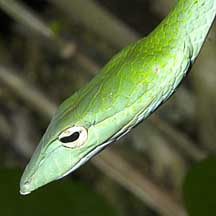
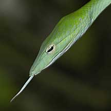
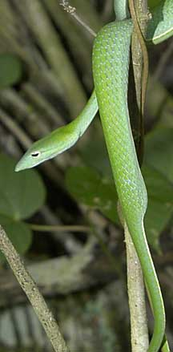

|
|
| snakes text index | photo index |
| Phylum Chordata > Subphylum Vertebrata > Class Reptilia > shore snakes |
| Oriental
whip snake Ahaetulla prasina Family Colubridae updated Oct 2016 Where seen? This elegant snake is arboreal and lives in bushes and trees. It is common in many of our wild places, including urban gardens and coastal areas. But is it well camouflaged and often overlooked as a green vine. Indeed, it is also called the Green vine snake. It is active during the day as well as at night. It is found throughout Southeast Asia. It was previously known as Dryophis prasinus. Features: To about 2m long. Considered the largest and longest of the whip snakes, it is nevertheless still quite a slender snake. It has a long thin tail that can take up nearly 40% of the length of the snake. Adults are a fresh almost flourescent green, while juveniles may be yellow to pale brown. It has a broad but elegant head with small eyes. The groove infront of the eyes allows the snake stereoscopic vision for more accurate judgement of distance and thus a successful strike at prey. According to Stuebing, it has interesting threat display of extending the tongue and leaving it extended as long as it feels disturbed. It is mildly venomous but shy and will prefer to slide away into the undergrowth. If you want to take a closer look at it, avoid disturbing it. Its venom is too weak to affect humans. But sadly, it is often killed on sight by people who fear snakes. What does it eat? It eats mainly lizards, but also frogs and small birds. Whip babies: Mama snake gives birth to live young in litters of 4-10. The babies look just like their parents. |
 Chek Jawa, Aug 03  Tongue threat display? |
 A long thin tail. Chek Jawa, Aug 03 |
| Oriental whip snakes on Singapore shores |
On wildsingapore
flickr
|
| Other sightings on Singapore shores |
| Distribution in Singapore on this wildsingapore flickr map |
| |
Links
|